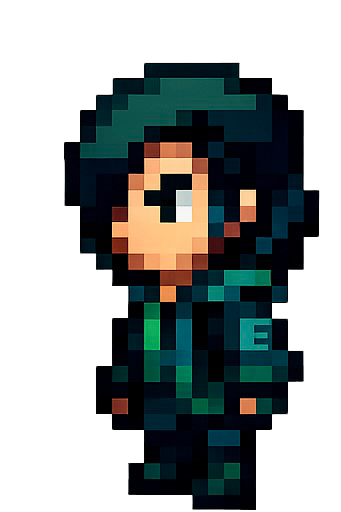

Open files / two ways to investigate
Follow the evidence.
Learn in a guided world. Build a topology you can inspect. Open a case below and try a small part of each Inspector product.
File 01 / supervised learning
Inspector-Edu™
A guided cybersecurity learning platform for institutions. Story, bounded tasks and instructor oversight turn each lesson into evidence you can explain.
Open the Pro case →Fixed sample output only. No real commands, backend, host connection or saved progress.

Cave entry / 00
A terminal glows in the cave.
Type ls.
Only the displayed lesson command is accepted.
Awaiting sample command…
Evidence record / this visit only
- No evidence collected yet.
- Learning modes
- Story · Task · Network Editor · Inspector Online
- Instructor oversight
- Bounded lab tasks with learner evidence for review.
- Access status
- Pilot access is not currently available. Hosted learner runtime and institutional access have not yet been verified. The current Alpine Linux development image does not establish a hosted learner environment.
File 02 / desktop topology design
Inspector-Pro™
A desktop application for visual topology design and structural validation. Arrange devices, inspect their properties and keep a project record.
Return to the Edu case ↑Edit local preview data. Checks cover native topology structure only; no IP, routing, reachability, image existence or deployment check is made. No app backend is contacted.
Select a device to edit. Drag to arrange, or use arrow keys on a focused device.
Connections
New ordinary links receive the next unused
ethN interface on each device. Edit an existing
record to inspect its endpoints.
Structure findings
Sample ready. Select Check structure to inspect the record.
Preview data downloads
Browser-generated files only. Export uses applied edits. These files do not launch a network or prove a native app save/export journey.
- Design record
- Node templates, properties, endpoint connections and visual positions.
- Structural scope
- Required fields, unique device IDs, link references and interface use. The preview mirrors the Python structural validator.
- Desktop availability
- Versioned installers and verified checksums are not yet available.
Correspondence / institutional enquiries
Discuss a supervised pilot.
Tell us about your organisation and learning context. We’ll follow up to discuss whether the current pilot is a fit.